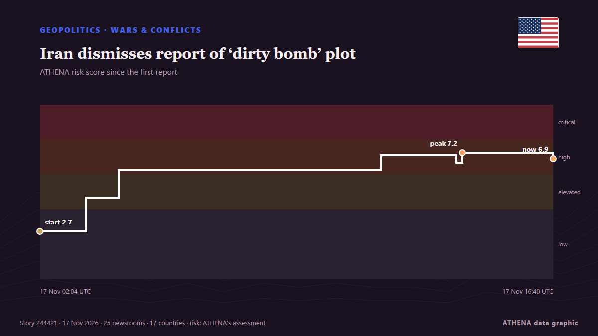

ATHENA Glaux Intelligence — Παγκόσμια ειδησεογραφική ανάλυση — κάθε αριθμός εξηγημένος
Κάθε είδηση, ελεγμένη σε πολλές χώρες.
Το ATHENA Glaux παρακολουθεί 635 ειδησεογραφικά μέσα σε όλο τον κόσμο. Μια είδηση γίνεται επαληθευμένο γεγονός μόνο όταν την αναφέρουν ανεξάρτητα μέσα. Κάθε γεγονός δείχνει ποιος το ανέφερε πρώτος και έναν βαθμό κινδύνου με τους λόγους του.
Αναφορές έρχονται από ανεξάρτητα μέσα — όταν δύο συναντηθούν στην ίδια ιστορία, γίνεται επιβεβαιωμένο γεγονός.
Πώς ελέγχει το ATHENA μια είδηση
- ΣυλλογήΟι αναφορές φτάνουν από ανεξάρτητα μέσα σε πολλές χώρες.
- ΑντιστοίχισηΌταν δύο μέσα συναντιούνται στην ίδια είδηση, γίνεται επαληθευμένο γεγονός.
- ΕξήγησηΚάθε γεγονός δείχνει ποιος ήταν πρώτος, πόσο εξαπλώθηκε και γιατί ο κίνδυνος είναι αυτός.

ΓεωπολιτικήIran dismisses report of ‘dirty bomb’ plot
For oil, the report adds to the escalation risks around a conflict that is already disrupting Hormuz shipping. από investingLive (ForexLive)
Οι τίτλοι των ειδήσεων παρουσιάζονται στα αγγλικά, όπως δημοσιεύτηκαν.
Oman, Iran Discuss Safeguarding Maritime Corridors
Muscat: Sayyid Badr bin Hamad al Busaidi, Foreign Minister, met Dr Abbas Araghchi, Foreign Minister of the Islamic Republic of Iran, at the Foreign Ministry's headquarters on Tuesd... από Oman Observer
US and Russia to oppose talks on limiting autonomous weapons
Major military nations argue that existing humanitarian law is enough to govern warfare. από The Straits Times

Πλοία στα θαλάσσια περάσματα τώρα
Ζωντανές μετρήσεις AIS. Πατήστε ή περάστε πάνω από μια μπάρα για λεπτομέρειες.
17 killed in two mass shootings in South Africa
Roughly 60 people are killed in South Africa on average a day, according to police statistics. από The Straits Times
‘Emperor’s New Clothes’: Burnham breaks 10-year taboo on Brexit
Boris Johnson's 'oven ready' Brexit deal never tasted very good. από EUobserver
Iran's IRGC strikes radar at US military base in Bahrain
Manama - Blasts and sirens rang out over Bahrain and authorities urged residents to seek shelter on Sunday as Iran's Guards said they had attacked a US military base in the Gulf... από Oman Observer
Γεωπολιτική, Πολιτική & Ασφάλεια
Περισσότερα ›Israel: Party chiefs say Netanyahu's election fraud claims a coup attempt
Netanyahu subsequently accused Arab parties of electoral fraud after they gained a record number of seats. από Africanews (English)
- Πόλεμοι & συγκρούσεις
Iranian drones hit US radar system in Bahrain — IRGC
- Πόλεμοι & συγκρούσεις
3rd US aircraft carrier arrives in Middle East amid Iran tensions
- Πόλεμοι & συγκρούσεις
After Yemen setback, Saudi Arabia replaces military commander
- Πόλεμοι & συγκρούσεις
Bahrain says its air defenses intercepted several Iranian attacks
Οικονομία, Χρηματοοικονομικά & Αγορές
Περισσότερα ›Milburn demands welfare reform and job help to tackle youth unemployment crisis
David Hughes, David Lynch and Áine Fox, Press Association Andy Burnham’s government must back sweeping changes to tackle youth unemployment or risk a “lost generation” of jobless youngsters, Alan… από Nation.Cymru
- Κατοικία & ακίνητα
Minns shelves underquoting laws amid housing slump and backlash from Sydney agents
- Τράπεζες & πίστη
FirstFT: Leak of 15mn Deutsche Bank files exposes systemic failures
- Τράπεζες & πίστη
Palestinian woman killed, 10 wounded in settler gunfire, official TV says
- Μετοχές, ομόλογα & αγορές
Alonso, Loeb to make Dakar Rally return for Aston Martin
Εμπόριο, Βιομηχανία & Υποδομές
Περισσότερα ›Ukraine missile strike severs Russia’s Crimean bridge
Russia has halted all traffic on the bridge connecting to the annexed Crimean peninsula, with officials urging locals not to panic and saying the delivery of food and essentials would not be affected. από CNA (Channel NewsAsia)
- Κατασκευές & υποδομές
Ukraine, Russia hit key bridges ahead of Putin-Xi-Trump summit
- Κατασκευές & υποδομές
Russian strikes hit two major Kyiv bridges
- Μεταποίηση
Tesla confirms €3B Cybercab factory at Giga Berlin for up to 1M a year
- Αερομεταφορές, σιδηρόδρομος & οδικές
Scope of cooperation between Russia and Vietnam expanding — Kremlin aide
Ενέργεια, Πόροι & Περιβάλλον
Περισσότερα ›Japan proposes ‘Asian IEA’ to manage oil stockpiles
Tokyo hopes joint reserves would insulate import-dependent region against future energy shocks. από Financial Times - Markets
- Κλίμα & κλιματική πολιτική
UN climate chief warns of AI 'double-edged sword' at COP31
- Πετρέλαιο & φυσικό αέριο
Everllence secures first order for methane dual-fuel 8S50ME-GI Mk10.7 engine
- Πετρέλαιο & φυσικό αέριο
Iraqi probe reveals evidence of oil smuggling in Jurf al-Sakhr
- Κλίμα & κλιματική πολιτική
Minister advocates shared efforts to protect Amazon
Τεχνολογία, ΤΝ & Κυβερνοασφάλεια
Περισσότερα ›South Korea tightens exam security after AI cheating scandal
The announcement comes after an individual admitted on Sunday to using AI tools to cheat in an exam, triggering panic ahead of the college test. από Free Malaysia Today
Επιχειρήσεις, Εταιρείες & Επενδύσεις
Περισσότερα ›David Beckham sues after his fragrance is sold in gas stations and discount stores
David Beckham’s company is suing beauty group Coty for at least $41 million, alleging that sales of his perfumes in discount stores breached their licensing agreement and damaged his luxury brand. από The Independent
- Επιχειρηματικά κεφάλαια
Isomorphic Labs raises $5bn from Sequoia and Greenoaks for AI drug design
- Νεοφυείς & καινοτομία
Wondermind Investor Lawsuit Against Selena Gomez and Co-Founders Dismissed
- Εταιρική στρατηγική
CAA and Hybe Launch Strategic Partnership
- Ανταγωνισμός
Sony defeats £2 billion UK claim over PlayStation Store pricing
Δυστυχήματα & έκτακτες ανάγκες
Περισσότερα ›Bulgarian Injured in Railway Accident in Prague
Several people suffered serious injuries in Tuesday’s collision above Seifertova Street. από Expats.cz
- Δυστυχήματα & έκτακτες ανάγκες
Isaac the cat found one week after deadly Brooklyn building collapse
- Δυστυχήματα & έκτακτες ανάγκες
Pedestrian seriously injured after getting hit by a car in Mississauga
- Δυστυχήματα & έκτακτες ανάγκες
Risk of nuclear accident in Ukraine increasing this winter, atomic safety regulators say
- Δυστυχήματα & έκτακτες ανάγκες
Gunman Found Dead after 2 Public Safety Officers Are Shot at New York City Apartment Complex
Τρεις τρόποι να διαβάσετε σήμερα
Ξεκινήστε από αυτόν που ταιριάζει στον χρόνο σαςΕπαληθευμένα γεγονότα
Κατά σειρά έκτασης της κάλυψης
- Nepal’s push for mountain climate action features in COP31 draft decision133 μέσα · 59 χώρεςΚίνδυνος 3.5
- Jensen Huang says he would be ‘honored’ to return as Nvidia CEO108 μέσα · 40 χώρεςΚίνδυνος 5.2
- Bond. Vampire Bond. Why Robert Pattinson can’t possibly play 00783 μέσα · 35 χώρεςΚίνδυνος 3.0
- APEC summit: What Trump, Xi and Putin want49 μέσα · 28 χώρεςΚίνδυνος 4.2
- Euro struggles as resilient US economic data backs hawkish Fed outlook65 μέσα · 27 χώρεςΚίνδυνος 2.9
Γραφείο Ανάλυσης
Κάντε μια ερώτηση και διαβάστε τεκμηριωμένη αξιολόγηση μιας βασικής είδησης, μαζί με το τι θα την διέψευδε.
Ανοίξτε το Γραφείο Ανάλυσης ›Η σημερινή εικόνα
| 18:00 | 382 |
|---|---|
| 19:00 | 886 |
| 20:00 | 420 |
| 21:00 | 444 |
| 22:00 | 485 |
| 23:00 | 298 |
| 00:00 | 358 |
| 01:00 | 355 |
| 02:00 | 309 |
| 03:00 | 331 |
| 04:00 | 359 |
| 05:00 | 563 |
| 06:00 | 424 |
| 07:00 | 888 |
| 08:00 | 742 |
| 09:00 | 429 |
| 10:00 | 519 |
| 11:00 | 539 |
| 12:00 | 613 |
| 13:00 | 468 |
| 14:00 | 798 |
| 15:00 | 641 |
| 16:00 | 472 |
| 17:00 | 659 |
Κίνδυνος των σημερινών γεγονότων
Αναδυόμενα σήματα
- Νέο όνομα στις ειδήσεις · Ενεργό τώραKerch Bridge
- Απότομη αύξηση · Ενεργό τώραUnited Airlines
- Απότομη αύξηση · Ενεργό τώραChase
- Απότομη αύξηση · Ενεργό τώραQuad
- Απότομη αύξηση · Ενεργό τώραAlan Milburn
Μείνετε ενημερωμένοι
ATHENA Weekly Risk Picture
Οι μεγαλύτεροι γεωπολιτικοί, οικονομικοί και ναυτιλιακοί κίνδυνοι της εβδομάδας, διασταυρωμένοι και βαθμολογημένοι.
Κάθε Παρασκευή στις 08:00 ώρα Ελλάδας · δωρεάν · στα αγγλικά
Δωρεάν εγγραφήΤο ATHENA στο Telegram
Οι ειδήσεις τη στιγμή που δημοσιεύονται: έκτακτα γεγονότα με κίνδυνο 6 ή περισσότερο, ωριαία σύνοψη, ενημερώσεις κινδύνου και η ημερήσια ενημέρωση στις 10:00.
Δωρεάν · αναρτήσεις στα αγγλικά · αποχωρείτε όποτε θέλετε
Είσοδος στο κανάλιΤην εγγραφή τη διαχειρίζεται η beehiiv με διπλή επιβεβαίωση: τίποτα από όσα πληκτρολογείτε δεν αποστέλλεται στο ATHENA, και κάθε τεύχος έχει σύνδεσμο διαγραφής.
Παρακολούθηση κινδύνων
Περισσότερα ›Παγκόσμιοι κίνδυνοι — εβδομάδα 47, 2026 (16–22 Νοε) ›